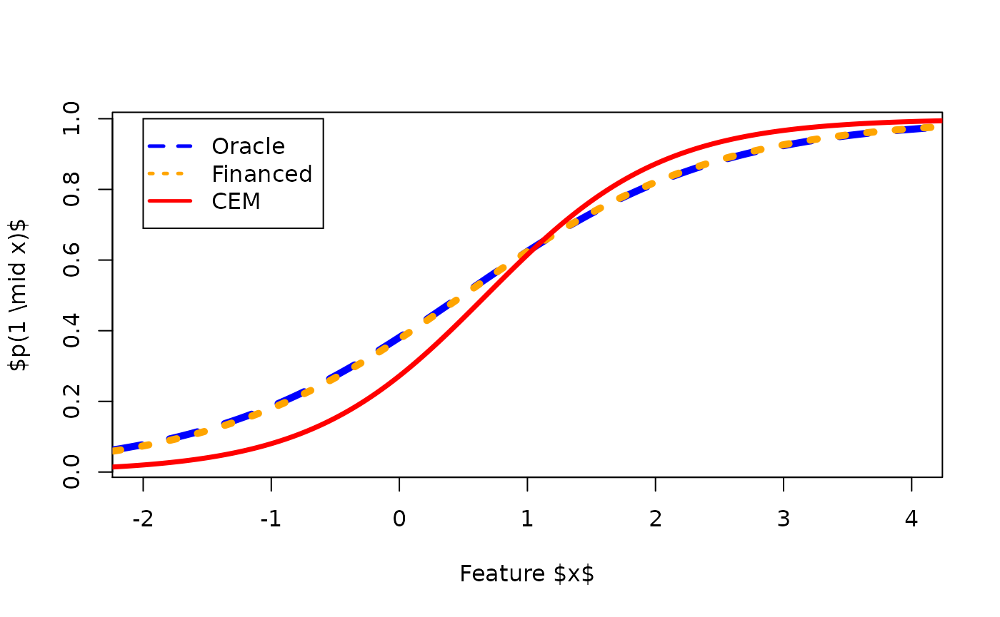

vignettes/figure1.Rmd
figure1.Rmdm <- 10000 set.seed(21) y <- rbinom(m, 1, 0.5) data_test_pred <- array(0, c(m, 2)) for (n in 1:1) { x <- array(0, c(m, n)) x[y == 0, ] <- mvrnorm(n = sum(y == 0), mu0[1:n], sigma0[1:n, 1:n]) x[y == 1, ] <- mvrnorm(n = sum(y == 1), mu1[1:n], sigma1[1:n, 1:n]) data_test_pred[, 1:(n + 1)] <- as.matrix(cbind.data.frame(y = y, x = x)) rm(x) } rm(y)
oracle <- glm(V1 ~ V2, data = as.data.frame(data_test_pred), family = binomial(link = "logit"))
reject <- predict(oracle, as.data.frame(data_test_pred), type = "response") < 0.3
reclass_model <- reclassification( as.matrix(data_test_pred[!reject, 2]), as.matrix(data_test_pred[reject, 2]), data_test_pred[!reject, 1] )
# path_to_tex <- file.path(dirname(rstudioapi::getActiveDocumentContext()$path), "../TEX_CODE/biais_CEM.tex") # tikz(file = path_to_tex, width = 6, height = 3, engine = "pdftex", pointsize = 14) plot(x = data_test_pred[, 2], y = predict(reclass_model@financed_model, data.frame(x = data_test_pred[, 2]), type = "response"), type = "n", ylab = "$p(1 \\mid x)$", xlab = "Feature $x$", xlim = c(-2, 4)) lines(x = data_test_pred[order(data_test_pred[, 2]), 2], y = predict(oracle, data.frame(V2 = data_test_pred[order(data_test_pred[, 2]), 2]), type = "response"), col = "blue", lwd = 5, lty = 2) lines(x = data_test_pred[order(data_test_pred[, 2]), 2], y = predict(reclass_model@financed_model, data.frame(x = data_test_pred[order(data_test_pred[, 2]), 2]), type = "response"), col = "orange", lwd = 5, lty = 3) lines(x = data_test_pred[order(data_test_pred[, 2]), 2], y = predict(reclass_model@infered_model, data.frame(x = data_test_pred[order(data_test_pred[, 2]), 2]), type = "response"), col = "red", lwd = 3.5) legend(-2, 1, pch = c(-1, -1, -1), lty = c(2, 3, 1), lwd = (2.5), col = c("blue", "orange", "red"), legend = c("Oracle", "Financed", "CEM"), cex = 1 )

# dev.off()